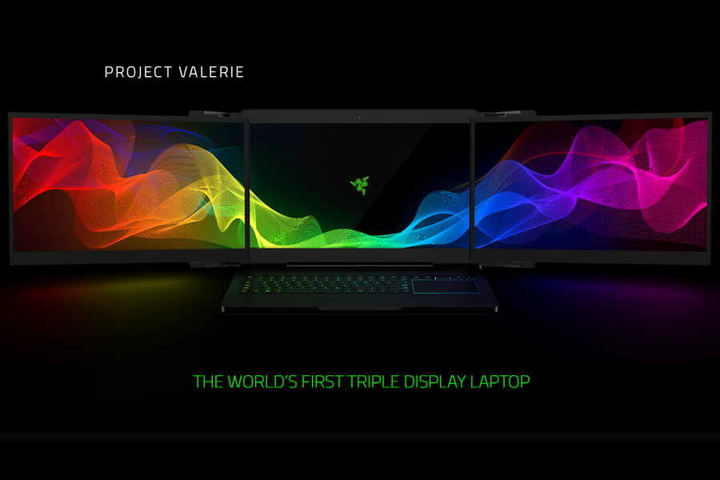

The Craziest Stuff from CES 2017
Posted on August 16, 2017
Project Valerie
The Consumer Electronics Show (CES) 2017 wrapped up a little over two weeks ago and there was a lot of cool new tech put up by big and small players alike. Following is a rundown of the craziest stuff that we saw at the annual convention emanating from Las Vegas.

Razer’s Project Valerie takes immersive portable gaming to a whole another level with its three 17-inch screens. Yes, you read it right. The laptop has the same internals as Razer’s high end gaming laptop, the Blade Pro. But Project Valerie is twice as thick and weighs more than eleven pounds.
Once you open the laptop, you have to slide the two peripheral screens out and lock them into place. All of the screens are 4K IGZO panels and are managed by Nvidia’s G-Sync monitor technology to ensure a fluid multi-display action.
It supports Nvidia’s surround gaming with a 180-degree field of view. Additionally, it also packs enough power to drive the Oculus Rift or HTC Vive virtual reality headsets.
No details on pricing yet but it’s not going to be cheap by any means. The standard Razer Blade Pro retails for upwards of $3,000, so we can expect a price tag of at least double that. No idea of availability either but Razer has a reputation for releasing their products soon after showcasing them at CES. So those of you who want an automated triple display laptop, keep the money handy.
Acer Predator 21x
If you thought that Project Valerie was heavy, wait till you get a load of this. The Acer Predator 21x packs a ginormous 21 – inch curved screen and weighs in at a ridiculous 20 pounds. Even more preposterous is its price tag of $9,000.
It packs in Intel’s latest seventh generation Core i7 processors, two Nvidia GeForce GTX 1080 GPUs, four speakers and two subwoofers. Additionally, it has two power supplies, five system fans and nine heat pipes to stay cool. We can safely say that this is a behemoth of a laptop.
This laptop hits the stores in February, so for those gamers who are flush with cash, your Christmas just might come early.
LG W7 Wallpaper TV
Moving from crazy heavy and bulky to the other end of the spectrum at stupid thin is LG’s 2.5 millimeter thick (read thin) W7 Wallpaper TV. It is arguably the coolest TV that debuted at CES 2017. This TV hugs the wall like another coat of paint and delivers picture quality as good as LG’s regular OLED panels. The TV comes in both 65 and 77 inch models.
Samsung's 12 MP BRITCELL Camera Explained!
Posted on August 9, 2017
First of all, let’s address the elephant in the room. This is for the benefit of those who assess camera quality by its megapixel count. Megapixels DON’T MATTER, unless you plan on blowing up the pictures into life size portraits and hanging them on your wall instead of just posting them on Instagram and Facebook.
Now that we have killed the Megapixel Myth once and for all, let’s look at what actually matters when making a great smartphone camera. Our smartphone cameras are getting really good, maybe not as good as your DSLRs but good enough for the casual photographer in you. The biggest thing that matters is the sensor. This is the most important piece of hardware and forms the corner stone of making a good camera. You can think of a sensor as a grid of pixels that takes in light and converts it into electrical signals. Generally a larger sensor is preferred over a smaller one as a larger sensor will have more pixels and therefore be more sensitive to light.
Samsung’s new BRITCELL sensor allows them to maintain the same light sensitivity albeit at a smaller pixel count as well as smaller size of the individual pixels. It also allows them to make the sensor thinner and smaller. That is the reason why you see a much smaller camera bulge in the Galaxy S7 compared to the Galaxy S6.
The biggest difference in Samsung’s BRITCELL sensor is in the sub pixels. Each pixel has got 4 sub pixels. Now usually the 4 sub pixels are – Red, Green, Blue and Green. But Samsung’s sensor switches out the two greens for two whites. They say it helps in low light photography.
Samsung also promises ridiculously fast auto focus. The new sensor employs Phase Detection Autofocus, something that is found in DSLRs. Samsung might just make good on its promise. The new sensor also makes use of Samsung’s Smart WDR technology that allows it to merge different multiple exposure images into one for better spatial resolution.
Another thing that matters is the aperture. Wider the aperture, the more light enters the sensor which means better low light photography. Smartphone camera sensors have a fixed aperture. There are cameras with f/2.0, f/1.9 and even f/1.8 aperture. The number that you see, smaller it is, wider the aperture. The BRITCELL camera has an industry first f/1.7 aperture and that should result in brighter low light photos.
Image stabilization plays a huge role in cameras. We have two kinds of image stabilization, hardware (optical image stabilization) and software (electronic image stabilization). The former is usually preferred over the latter and Samsung checks OIS in its camera spec sheet. That means blur free photos and buttery smooth videos.
Finally, image processing fits in as the last piece of the puzzle. Each smartphone does it in a different way. Some sharpen the picture too much, some expose it too much, others leave it under exposed and so on and so forth. Samsung needs to do a little extra post processing to make up for the lesser sensitivity to green light. But I wouldn’t sweat too much about it as image processing can be revised via a software update.
In the end, the answer to the question whether a photo is good or bad is subjective. It differs from person to person. An accurate image may not be pleasing to the eye whereas a photo that is liked by many may not be entirely accurate. I would just like to assure the people that it is not the end of the world because the Galaxy S6 had a 16 MP camera and the S7 has “just” a 12 MP one. Suffice it to say that the new camera would be as good as the previous one if not better
Say Hello to the Moto Z
Posted on June 11, 2016
Lenovo announced the 2016 Moto flagships – the Moto Z and the Moto Z Force at Tech World 16. Don’t worry though, the beloved Moto X is not dead yet as the company gave a statement and I quote “The Moto X is alive and well”. For now though, let’s focus on the present which is actually quite exciting.
Like last year we have two new devices, Moto Z and Z Force. Both devices have 5.5” Quad HD (2560 x 1440) AMOLED Displays, 4 GB RAM, Snapdragon 820 and an all new beautiful metal design. But there are quite a lot of differences between the two devices. The Moto Z is crazy thin measuring in at 5.2 mm while the Z Force is slightly ‘thicker’ at 7mm. I am not the biggest fan of the design of the devices especially with that unsightly camera bump but I am pretty sure the in hand feel would be quite solid and premium.
The Moto Z has a 13 MP camera module with f/1.8 aperture, laser autofocus, OIS (Optical Image Stabilization) and dual tone flash. What people are concerned about though is that fact that it only has a 2600 mAh battery pack which seems kind of measly in this day and age. Turbo charging would come in very handy for those quick and short charges. The Z Force bumps the camera resolution up to 21 MP, same aperture and throws in phase detection autofocus. It has a much larger 3500 mAh power pack. It also comes with Moto’s Shattershield technology, so even if you drop the device, it should be just fine. Both device have the same 5 MP snapper at the front along with an LED flash. They also share a square fingerprint scanner on the front like we saw on the Moto G Plus.
One of the biggest omission that has caused quite a stir is the lack of a 3.5 mm headphone jack. Now companies like Oppo and LeEco have already shown devices that don’t sport a 3.5 mm headphone jack but this is the first major OEM (Original Equipment Manufacturer) that has removed the beloved old jack. I know that this is going to be a hard pill to swallow for some people but the truth is if we want to move ahead, then we need to let go of the past.
And anyways once Apple let’s go of the jack, everybody would be fine with it and start following the trend. The tricky part is carrying the extra adapter for USB Type C to a 3.5 mm jack. Companies need to start manufacturing headphones and earphones that connect straight via the USB Type C port, and that’s gonna happen pretty soon. Actually there are already some available in the market right now.
That’s quite a lot of stuff. But we haven’t gotten to the best part yet. The most exciting component of the Moto flagships are the Moto Mods. They are Moto’s foray into the world of modular smartphones and quite honestly this seems like a better implementation than LG G5 and its ‘friends’. There are sixteen pins at the bottom portion of either devices rear and these allow different Moto Mods to latch onto the phones using pretty powerful magnets. You don’t need to pry open your device or take out the battery. And all this happens seamlessly without you having to switch off the device or break up your user experience.
And there are quite a lot of Mods to choose from. There is a JBL SoundBoost Mod which turns the thin devices into pretty chunky boomboxes. And boy are they loud! It also has a built in kickstand and offers 10 extra hours of battery life. Then there is the Moto Insta-Share Projector that turns the phone into , you guessed it, a projector. You can project up to 70” on any surface. We also have the Incipio offGRIDTM PowerPack that offers up to 22 hours of battery life and also comes with wireless charging. There are also several Moto Style Shells that allow you to customize the look of your device and make it your own. They offer a wide range of materials, textures and fabrics.
That was quite a lot of news wasn’t it? I really like the direction the company is headed in under Lenovo’s leadership. Moto is coming up with exciting new products with tons of meaningful innovation, and all this ultimately benefits us, the consumer. And would you have guessed it? Lenovo is having one of the most ground breaking tech event of this year and the future looks pretty darn dope!